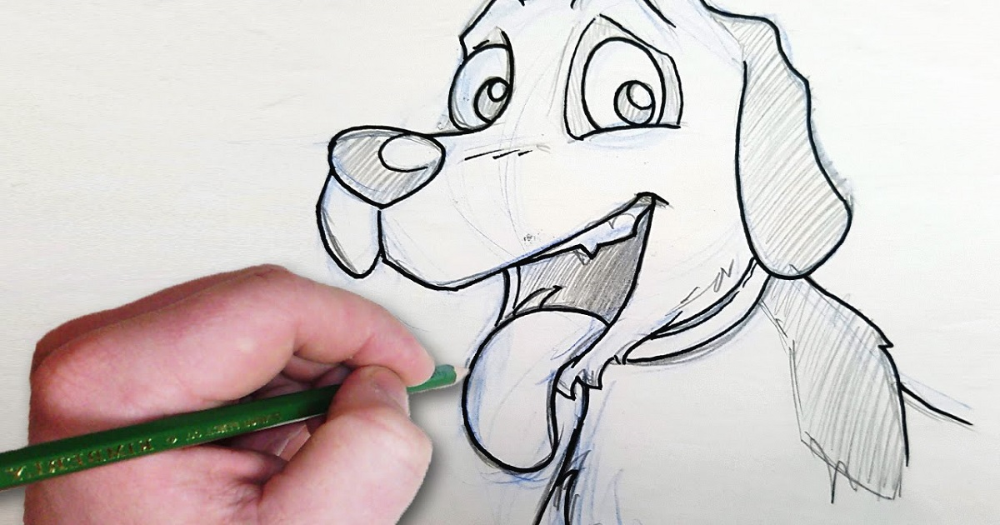
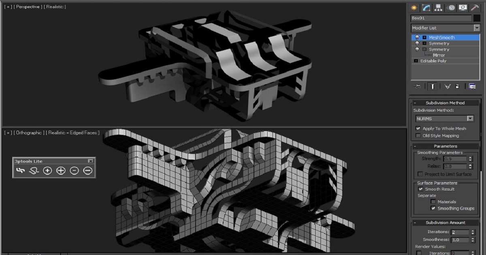
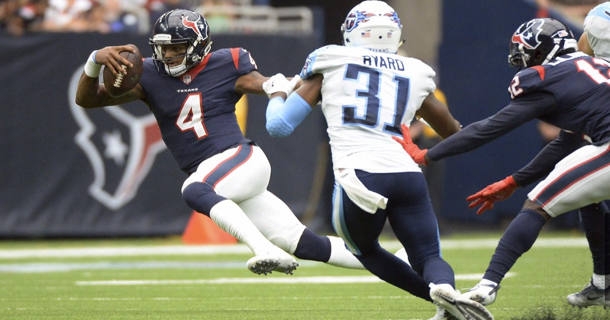

--Drawing--
Ever since I was little, I had always been into drawing. At first it stareted out with tracting, but eventually I got better and started free handing and practicing and practicing.

--Weightlifting--
At about the age of 11, I started to lift weights. At first it was only to help myself at football and to get better, but eventually I took a liking to it and started to lift for my own enjoyment rather than for the sports I was playing at the time. Since then, my fondness for lifting soon develpoed into a love and hobby of mine that I am very proud of.
>--Gaming--
Since I can remember, one of my favorite things to do has been to play video games. As far as I can remember, the very first video game that I played was The Legend of Zelda: Oracle of Ages. Since then I've alwasy had a fondness for video games and have alwasy have had a tendancy to choose video games of many other forms of entertainment.
>--3-D Modeling--
As I grew older and my love for video games developed, I stumbled upon the world of video game mods. At first I was content with using other people's mod, but eventually I wanted to create my own content and make my own mods. from there, I learned how to make 3-D meshes for video games and making my own in game objects. Ever since I learned how to do it, I practiced and practiced for hours on end to get better and make my mods as high of quality as possible.

>--Football--
Momma always told me that someday I would be good at something. Turns out that that something was hitting other guys while dressed up in head to toe in pads. I first started football at the age of 13 and have ever since then loved to be on a football field, playing in front of stands of people all cheering for the game. I played all throughout highschool and even had the possibility to play college, but actually turned it down to pursue another career path through college.

>